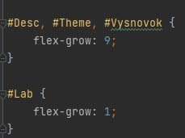
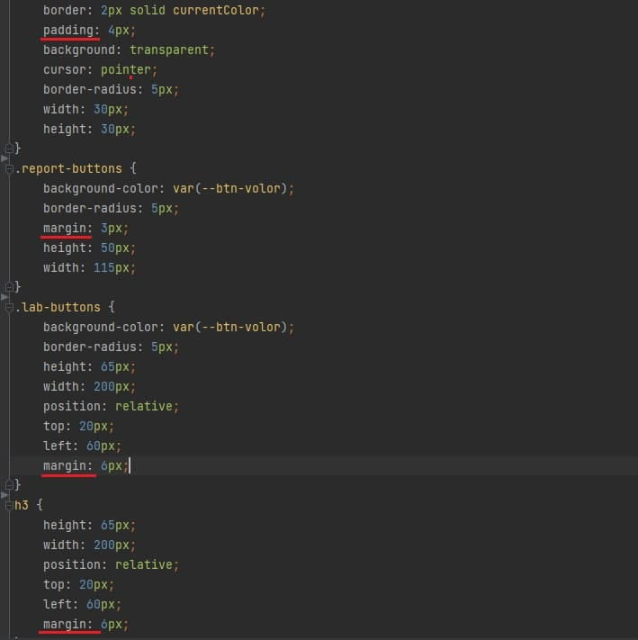
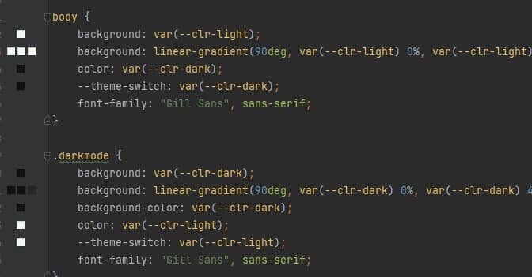
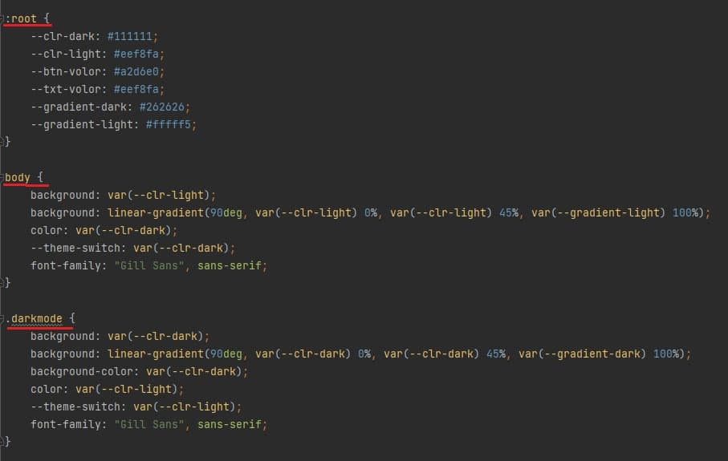
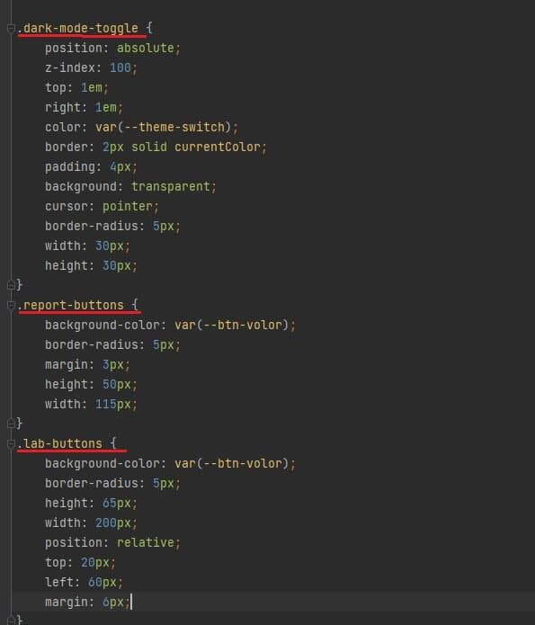
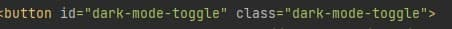
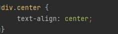

Лабораторна №2
Тема лабораторної роботи:
Каскадні таблиці. Селектори .Ідентифікатори. Стильове оформлення текстових елементів в HTML-документах.
Мета:
Придбати практичні навички роботи з селекторами,ідентифікаторами,
списками, різноманітними властивостями кольору і фону,
зовнішними та внутрішними відступами, плаваючими елементами,
оформленням текстових елементів
Ідентифікатор визначає унікальне ім'я елемента,
яке використовується для зміни його стилю і звернення
до нього через скрипти. Також ми використали таку властивість як flex-grow.
Вона визначає те, на скільки окремий flex-блок може бути більше сусідніх елементів.
У нашому випадку це на 9 y Desc, Theme, Vysnovok та на 1 y Lab.

Є внутрішні і зовнішні відступи.
Для додавання і управління шириною внутрішніх відступів з усіх чотирьох сторін елемента використовується властивість padding.
Для додавання і управління шириною зовнішніх відступів з усіх чотирьох сторін елемента використовується властивість margin.
Ми використали і padding і margin для задання відступів.

Для виконання завдання і більш привабливого вигляду нашого застосунку,
ми додали колір і фон. Для задання фону ми використовували background
або background-color і надавали йому відтінок, який потрібно.Також ми використали border,
що дозволяє одночасно встановити товщину, стиль і колір кордону навколо елемента.
У нас linear-gradient, що робить переходи від одного кольору до іншого.


Селектор - це частина CSS-правила, яка повідомляє браузеру,
до якого елементу веб-сторінки буде застосований CSS стиль.
Ми використали багато селекторів.


Селектори класу і тегу


Висновки:
Отже,у цій лабораторній роботі ми навчилися використовувати селектори та ідентифікатори.
Оформлювали сторінку нашого сайту різноманітними властивостями кольору і фону,
зовнішними та внутрішними відступами, оформленням текстових елементів.